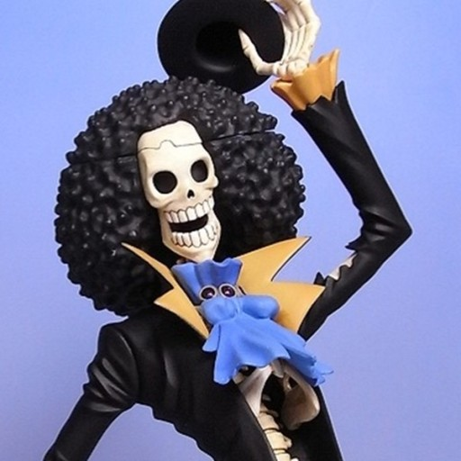

 원피스의 등장인물. 밀짚모자 일당의 음악가. 몽키 D. 루피의 여덟번째 동료. 말 그대로 영혼을 울리는 연주 실력을 자랑한다. 과거 웨스트 블루 어느 왕국의 기습부대 대원, 호위단장을 지내다가 룸바 해적단의 선장 대리 직책은 음악가 겸 검사로서 '콧노래'라는 이명과 함께 세간에 명성을 떨쳤다. 38살 때 '마의 삼각지대'에서 어마어마하게 강한 해적단을 만나 전투 끝에 동료들과 함께 숨을 거두었지만 부활부활 열매의 능력으로 부활했다. 세계일주을 마치고 쌍둥이 언덕에서 52년 동안 자신의 귀환을 기다리고 있는 라분과 재회할 날을 기대하며 모험을 계속하고 있다. 웃음소리는 '요호호호'.